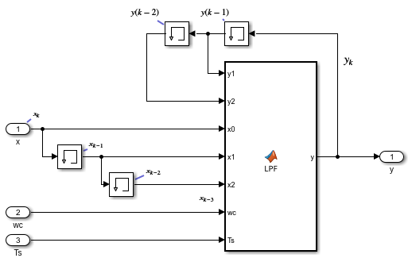
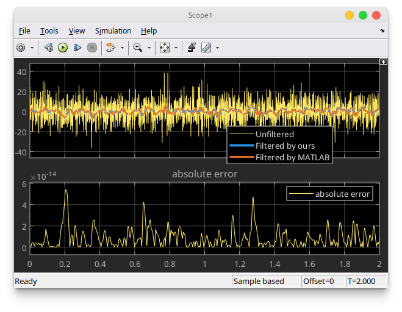

Digital Low-Pass Filter¶
In this section, we are going to do the following activities:
discretize a continuous-time low-pass filter by using bilinear transform (trapezoidal or Tustin) method
implement the discretized low-pass filter into MATLAB Simulink
compare the results from the implemented discrete low-pass filter to the shipped discrete low-pass filter in MATLAB Simulink
Required Imports¶
from IPython.core.display import HTML
from sympy import *
from mathprint import *
Ts, tau = symbols('T_s tau', positive=True)
s = symbols('s', complex=True)
z = symbols('z')
wc = symbols('omega_c', positive=True)
x, y = symbols('x y')
x0, x1, x2, x3 = symbols('x_k x_{k-1} x_{k-2} x_{k-3}')
y0, y1, y2, y3 = symbols('y_k y_{k-1} y_{k-2} y_{k-3}')
First-Order Low-Pass Filter¶
Transfer function of a first order lowpass filter (time-constant filter):
where \(\tau\) is the filter time constant (in seconds).
Discretization with Bilinear Transformation¶
Next, we transform \(s\) into \(z\) by applying the following substitution.
H = 1 / (tau*s+1)
mprint('H=',latex(H))
H = H.subs(1/s, Ts/2 * (z+1)/(z-1))
mprint('H=',latex(H))
Let us define \(x\) as the input to the filter and \(y\) as the output (filtered input).
eq = Eq(y, H * x)
mprint(latex(eq))
eq = simplify(eq)
mprint(latex(eq))
eq = Eq(numer(eq.rhs), expand(eq.lhs * denom(eq.rhs)))
mprint(latex(eq))
eq =expand(Eq(numer(eq.rhs)/z/Ts, eq.lhs * denom(eq.rhs)/z/Ts))
mprint(latex(eq))
Apply the following substitutions:
\(y\) becomes \(y_{k}\)
\(y/z\) becomes \(y_{k-1}\)
\(x\) becomes \(x_{k}\)
\(x/z\) becomes \(x_{k-1}\)
eq = eq.subs(x/z**3, x3).subs(x/z**2, x2).subs(x/z, x1).subs(x, x0).subs(y/z**3, y3).subs(y/z**2, y2).subs(y/z, y1).subs(y, y0)
mprint("\\small ", latex(eq))
Finally, by grouping the variables, we obtain:
eq = Eq(collect(eq.rhs, [x0, x1, x2, x3]), collect(eq.lhs, [y0, y1, y2, y3]) )
mprintb("\\small ", latex(eq))
Second Order Low-Pass Butterworth Filter¶
Transfer function of a second order lowpass filter (Butterworth):
where \(\omega_c\) is the filter cut-off frequency (in Hz).
Discretization with Bilinear Transformation¶
Similiar to the previous section, here we also transform \(s\) into \(z\) by applying the following substitution.
H = wc**2 / (wc**2+sqrt(2)*s*wc+s**2)
mprint('H=',latex(H))
H = H.subs(1/s, Ts/2 * (z+1)/(z-1))
mprint('H=',latex(H))
Let us define \(x\) as the input to the filter and \(y\) as the output (filtered input).
eq = Eq(y, H * x)
mprint(latex(eq))
eq = simplify(eq)
mprint(latex(eq))
eq = Eq(numer(eq.rhs), expand(eq.lhs * denom(eq.rhs)))
mprint(latex(eq))
eq =expand(Eq(numer(eq.rhs)/z**2/Ts**2/wc**2, eq.lhs * denom(eq.rhs)/z**2/Ts**2/wc**2))
mprint(latex(eq))
Apply the following substitutions:
\(y\) becomes \(y_{k}\)
\(y/z\) becomes \(y_{k-1}\)
\(y/z^2\) becomes \(y_{k-2}\)
\(x\) becomes \(x_{k}\)
\(x/z\) becomes \(x_{k-1}\)
\(x/z^2\) becomes \(x_{k-2}\)
eq = eq.subs(x/z**3, x3).subs(x/z**2, x2).subs(x/z, x1).subs(x, x0).subs(y/z**3, y3).subs(y/z**2, y2).subs(y/z, y1).subs(y, y0)
mprint(latex(eq))
Finally, by grouping the variables, we obtain:
eq = Eq(collect(eq.rhs, [x0, x1, x2, x3]), collect(eq.lhs, [y0, y1, y2, y3]) )
mprintb(latex(eq))
Implementation in Simulink¶
Download the Simulink file here (R2024b).
function y = LPF(y1, y2, x0, x1, x2, wc, Ts)
% y1 is y(k-1)
% y2 is y(k-2)
% y1 is y(k-1)
% y1 is y(k-1)
sq22 = 2*sqrt(2);
Tswc = Ts * wc;
A = 1 + sq22/Tswc + 4/Tswc^2;
B = 2 - 8/Tswc^2;
C = 1 - sq22/Tswc + 4/Tswc^2;
y = (x0 + 2*x1 + x2 - y1*B - y2*C ) / A;

